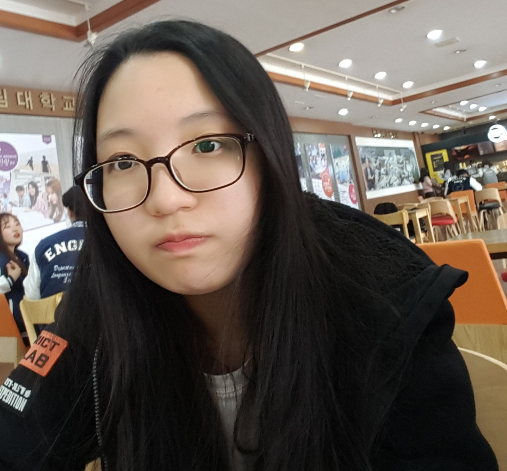

MOON JI WON
문지원
1.
문지원
2.
국어국문전공
3.
디지털인문예술전공
국어국문전공&디지털인문예술전공
2017년 1학년.한림대학교 인문학부 입학
2018년 2학년.주전공:국어국문, 복수전공:디지털인문에술
2019년 3학년. 교수님에 의해 별명 생김...(문한글)
MooN2 - html

문지원(Moon Ji won)
1998년 6월 10일생
1. 도농초등학교
2. 도농중학교
3. 수택고등학교
4.
한림대학교
대학생은 왜 지각할까?(지각을 할 수 밖에 없는 이유)